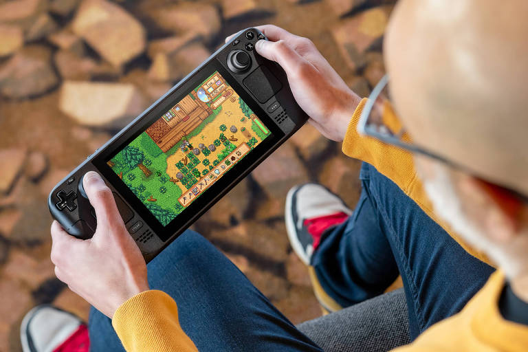
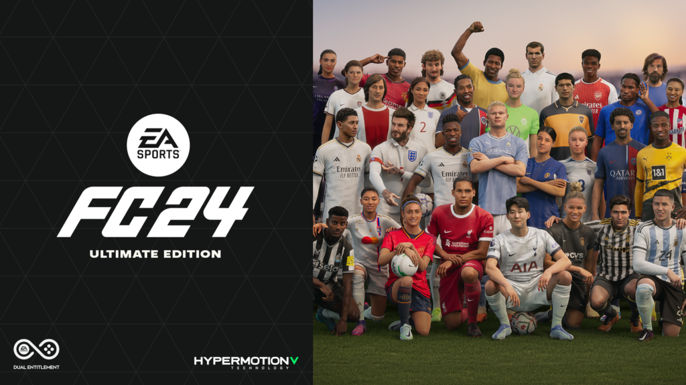
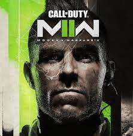
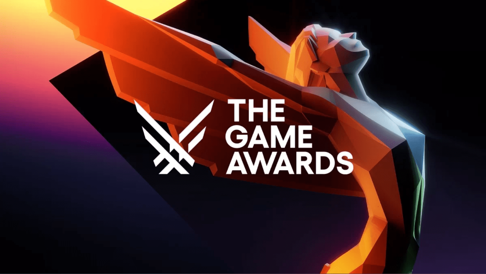
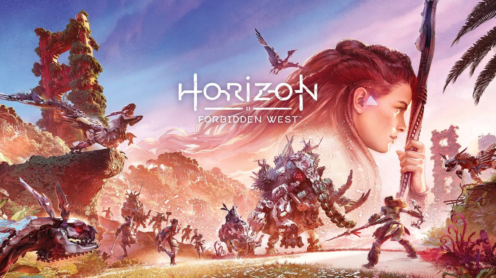
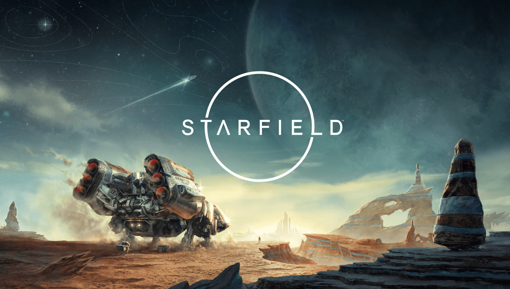
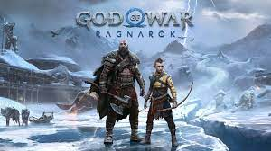

Steam Deck recebe desconto de 50% para estudantes
postado em 20 de abril de 2023 
A Valve anunciou nesta quarta-feira (1º de dezembro) que o Steam Deck, seu console portátil de jogos, está com desconto de 50% para estudantes. A promoção é válida até o dia 31 de dezembro.
Para aproveitar o desconto, os estudantes devem se inscrever no programa Steam Student, que oferece uma série de benefícios, incluindo descontos em jogos e DLCs. Para se inscrever, os estudantes devem ter uma conta da Valve e comprovar que são estudantes.
EA Sports FC registra aumento de 25% nas vendas antecipadas
postado em 02 de fevereiro de 2023 
A EA Sports anunciou nesta quarta-feira (1º de dezembro) que o EA Sports FC, seu novo jogo de futebol, registrou um aumento de 25% nas vendas antecipadas em relação ao FIFA 23.
O EA Sports FC é o sucessor do FIFA, que foi lançado pela última vez em 2023. O jogo perdeu os direitos de uso da marca FIFA, mas ainda contará com as licenças de clubes e jogadores reais.
Fortnite lança evento de Natal com tema de Matrix
postado em 20 de julho de 2023
A Epic Games anunciou nesta quarta-feira (1º de dezembro) que Fortnite está lançando um evento de Natal com tema de Matrix. O evento, chamado de "Matrix Resurrections: The Fortnite Experience", estará disponível até o dia 10 de dezembro.
O evento inclui uma série de desafios, recompensas e conteúdo temático de Matrix. Os jogadores poderão participar de missões, coletar itens e usar skins de personagens de Matrix.
Call of Duty: Modern Warfare II recebe trailer de lançamento
postado em 20 de janeiro de 2023 
A Activision Blizzard lançou nesta quarta-feira (1º de dezembro) o trailer de lançamento de Call of Duty: Modern Warfare II. O trailer, que tem duração de dois minutos, mostra cenas de ação do jogo, incluindo tiroteios, explosões e perseguições.
Call of Duty: Modern Warfare II é a sequência de Call of Duty: Modern Warfare, lançado em 2019. O jogo será lançado para PlayStation 4, PlayStation 5, Xbox One, Xbox Series X/S e PC em 28 de outubro de 2023.
Elden Ring recebe prêmio de jogo do ano no The Game Awards
postado em 08 de junho de 2023 
O jogo de ação RPG Elden Ring, desenvolvido pela FromSoftware e publicado pela Bandai Namco Entertainment, foi eleito o jogo do ano no The Game Awards 2022, que aconteceu na noite de quinta-feira (8 de dezembro).
O jogo, que foi lançado em fevereiro de 2022, é um sucesso de crítica e público, sendo elogiado por sua jogabilidade desafiadora, mundo aberto vasto e imersivo, e história envolvente.
Horizon Forbidden West recebe atualização com novo conteúdo
postado em 20 de setembro de 2023 
A Guerrilla Games anunciou nesta quarta-feira (1º de dezembro) que Horizon Forbidden West está recebendo uma atualização com novo conteúdo gratuito. A atualização, chamada de "The Frozen Wilds", estará disponível para download a partir de hoje.
A atualização inclui uma nova história, novos desafios, novos equipamentos e novas armas. A história se passa na região de The Frozen Wilds, uma área gelada e perigosa.
Starfield recebe trailer de lançamento
postado em 21 de maio de 2023 
A Bethesda Softworks lançou nesta quarta-feira (20 de julho) o trailer de lançamento de Starfield, seu novo jogo de RPG de ficção científica. O trailer, que tem duração de três minutos, mostra cenas de gameplay do jogo, incluindo exploração de planetas, combate espacial e combate corpo a corpo.
Starfield é um jogo de RPG de ficção científica desenvolvido pela Bethesda Game Studios e publicado pela Bethesda Softworks. O jogo será lançado para Xbox Series X/S e PC em 11 de novembro de 2023.
God of War Ragnarök recebe data de lançamento
postado em 30 de janeiro de 2023 
A Sony Interactive Entertainment anunciou nesta quarta-feira (20 de julho) a data de lançamento de God of War Ragnarök. O jogo será lançado para PlayStation 4 e PlayStation 5 em 9 de novembro de 2023.
God of War Ragnarök é a sequência de God of War, lançado em 2018. O jogo será desenvolvido pela Santa Monica Studio e publicado pela Sony Interactive Entertainment.